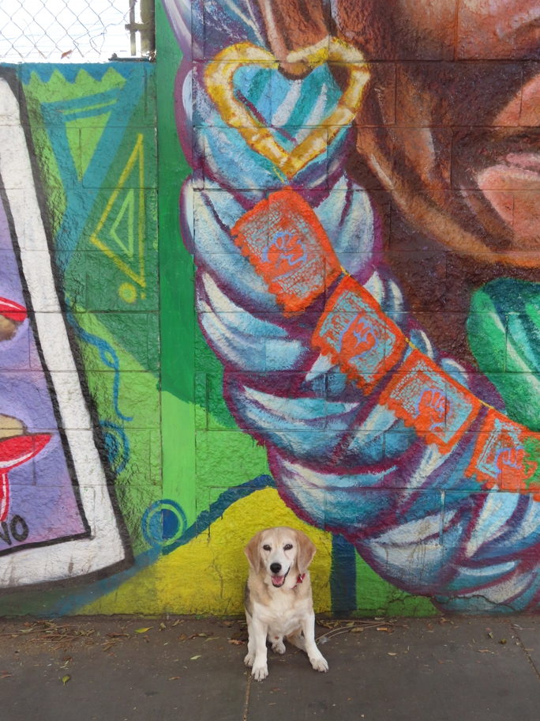

<--Previous Up Next-->

I should have taken a wider photo. On the left is a sliver of a hand sign for "SF". Hanging from the earring that we stopped for is papel picado with more hand signs.
hearts Huxley Beagle sanfrancisco